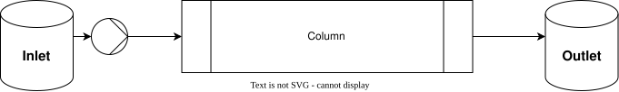
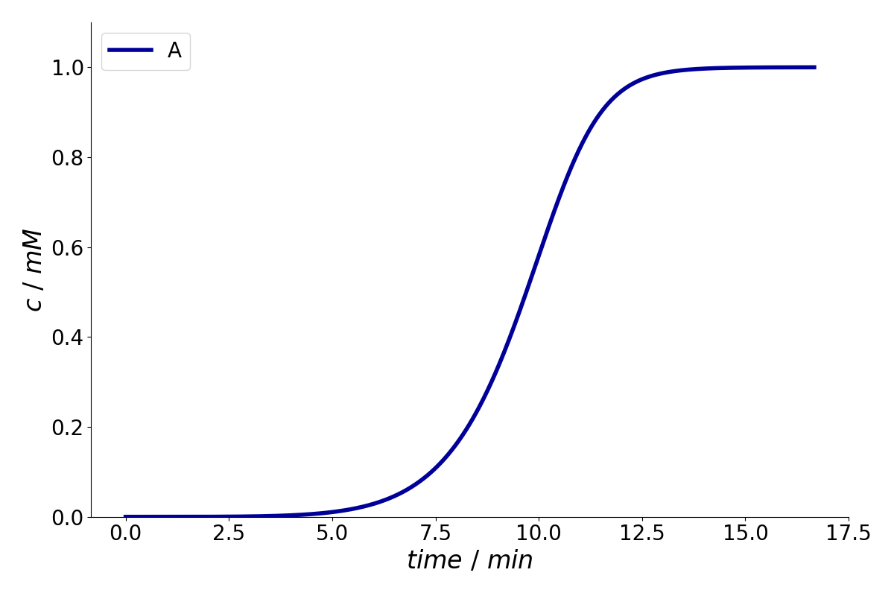

CADET User-Introduction#
In this tutorial, we will build a simple forward simulation with a breakthrough of one component using the following system:

1. Setting Up the Model#
We first create a ComponentSystem.
The ComponentSystem ensures that all parts of the process have the same number of components.
Moreover, components can be named which automatically adds legends to the plot methods.
from CADETProcess.processModel import ComponentSystem
component_system = ComponentSystem()
component_system.add_component('A')
Inlet Model#
In CADET, the Inlet pseudo unit operation serves as a source for the system and is used to create arbitary concentration profiles as boundary conditions.
The concentration profile is described using a piecewise cubic polynomial (cubic spline in the continuous case) for each component, where the pieces are given by the time sections.
In this example we set a constant inlet concentration of 1 mM.
from CADETProcess.processModel import Inlet
inlet = Inlet(component_system, name='inlet')
inlet.flow_rate = 6.683738370512285e-8 # m^3 / s
inlet.c = [[1.0, 0, 0, 0]] # mol / m^3
Column Model#
Adsorption Model#
Every unit operation model can be equipped with an adsorption model. The available models are listed in the binding model chapter.
For the Langmuir model, we use the Langmuir class.
Then, we decide if we want to use the rapid-equilibrium assumption in the binding model (binding_model.is_kinetic = False), which is not the case here (dynamic binding).
Finally, the parameters of the binding model have to be set for each component (they are vectors of length n_components).
All model parameters can be listed using the parameters attribute.
In case of the Langmuir model, we have to specify the parameters adsorption_rate, desorption_rate, and capacity.
from CADETProcess.processModel import Langmuir
binding_model = Langmuir(component_system, name='binding_model')
binding_model.is_kinetic = True
binding_model.adsorption_rate = [1.0, ] # m^3 / (mol * s) (mobile phase
binding_model.desorption_rate = [1.0, ] # 1 / s (desorption)
binding_model.capacity = [100.0, ] # mol / m^3 (solid phase)
General Rate Model#
We now add a second unit operation, the column model.
For the general rate model model, we use the GeneralRateModel class.
In this class, we set the parameters related to transport and column geometry.
from CADETProcess.processModel import GeneralRateModel
column = GeneralRateModel(component_system, name='column')
column.binding_model = binding_model
column.length = 0.014 # m
column.diameter = 0.02 # m
column.bed_porosity = 0.37 # -
column.particle_porosity = 0.75 # -
column.particle_radius = 4.5e-5 # m
column.axial_dispersion = 5.75e-8 # m^2 / s (interstitial volume)
column.film_diffusion = [6.9e-6] # m / s
column.pore_diffusion = [7e-10, ] # m^2 / s (mobile phase)
column.surface_diffusion = [0.0] # m^2 / s (solid phase)
Note that film, pore, and surface diffusion are all component-specific, that is, they are vectors of length n_components.
Initial Conditions#
Next, we specify the initial conditions (concentration of the components in the mobile and stationary phases) for the column. These concentrations are entered as vectors, where each entry gives the concentration for the corresponding component. In this example, we start with an empty column.
column.c = [0]
column.cp = [0]
column.q = [0]
The OUTLET is another pseudo unit operation that serves as sink for the system.
Note
In this case, the outlet unit is actually not required. We could use the outlet concentration signal of the column model instead.
from CADETProcess.processModel import Outlet
outlet = Outlet(component_system, name='outlet')
System Connectivity#
The connectivity of unit operations is defined in the FlowSheet class.
This class provides a directed graph structure that allows for the simple definition of configurations for multiple columns or reactor-separator networks, even when they are cyclic.
We add the previously defined units to the flow sheet and add connections between them.
from CADETProcess.processModel import FlowSheet
flow_sheet = FlowSheet(component_system)
flow_sheet.add_unit(inlet)
flow_sheet.add_unit(column)
flow_sheet.add_unit(outlet, product_outlet=True)
flow_sheet.add_connection(inlet, column)
flow_sheet.add_connection(column, outlet)
Note
Since the flow in the column models is incompressible, the total entering flow rate must equal the total outgoing flow rate. This restriction does not apply to a CSTR model, because it has a variable volume.
Process properties#
The Process class is used to define dynamic changes of model parameters or flow sheet connections.
This includes the duration of a simulation (cycle_time).
To instantiate a Process, a FlowSheet needs to be passed as argument, as well as a string to name that process.
from CADETProcess.processModel import Process
process = Process(flow_sheet, 'Langmuir Breakthrough')
process.cycle_time = 1000.0
3. Setting Up the Simulator and Running the Simulation#
To simulate a Process, a simulator needs to be configured.
The simulator translates the Process configuration into the API of the corresponding simulator.
from CADETProcess.simulator import Cadet
process_simulator = Cadet()
simulation_results = process_simulator.simulate(process)
4. Plotting the Results#
The data is stored in the .solution group of the SimulationResults object.
Finally, we plot the concentration signal at the outlet of the column.
simulation_results.solution.column.outlet.plot()

For further details on the front-end and more examples please refer to the CADET-Process documentation.